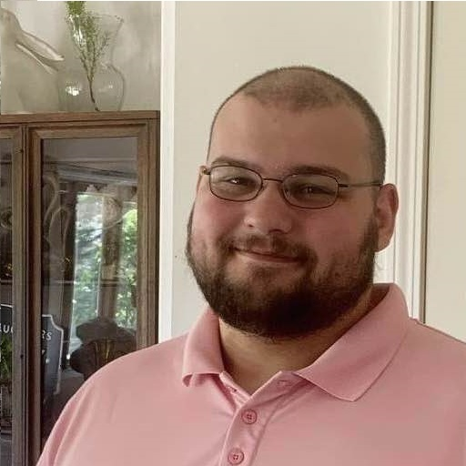

Hi, I'm Zayne Anderson, a Game Designer. Explore my work below.
This project was updated when working with a team. We each brought a segment of the map into the overall level and wanted to give the Player a sense of exploration moving further into the mountains. My design sets the overall world design for the level. I kept the layout for the city but started to update some of the buildings and accessories like Barrels and Tables. I added a goal to the end of my level forcing the Player to visit the temple to obtain the key to unlock the next scene in the level. I used the landscape tool to help redesign the scene and give it more definition with grass, foliage, and rocks to provide more immersion while blending the environment. Continuing with this project I will update more assets and refine the buildings to portray a better feel as I learn how to model more effectively.
This is part of a group project between 3 classmates. Each of us are focusing on different aspects. I'm playing around with Procedurally Generated level designs, and when completed, it will create levels with various objectives ensuring different playthroughs each time.

I'm a Game Designer with experience in Unreal Engine. I love creating cooperative games that push players to analyze and think. I also like to challenge myself and innovate ways to turn one idea into my own. I'm currently an Online Game Design Student at Full Sail University. I'm based out of Washington State. I love it here and I have hopes of opening my own studio based out of Washington.
If you would like to get in touch, feel free to reach out on social media or use the form below!